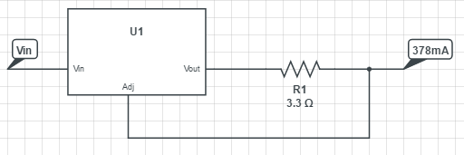
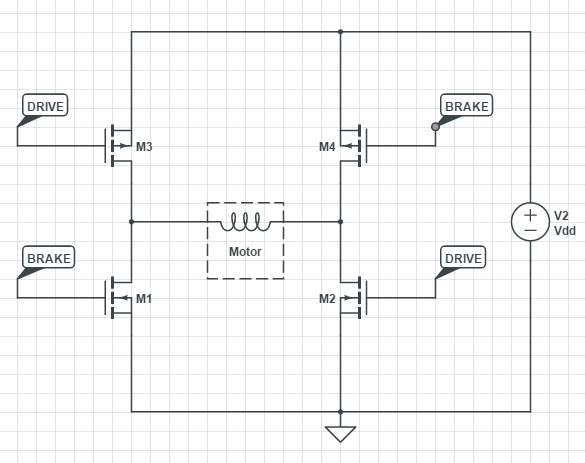
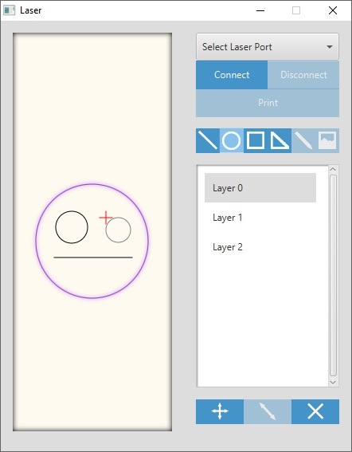
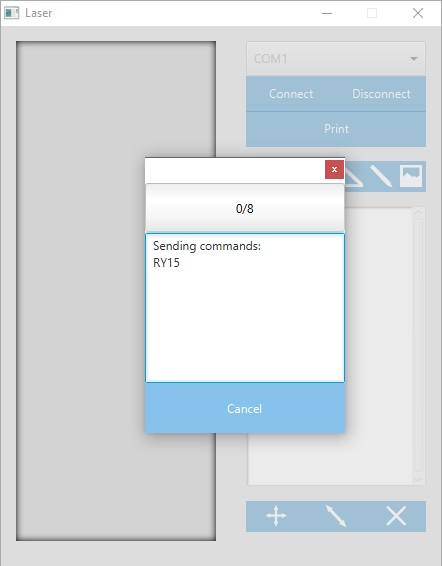

The goal of this project was to build a functioning laser cutter system out of a couple of spare DVD drives with a Java GUI. DVD-RW drives use laser diodes to write data to DVDs. The diode in a RW drive can reach class 3B at an output of approximately 300 to 400mW when properly magnified. Additionally, the motor and rail systems from the DVD drive can be used as the axes of a CNC laser system. The laser-rail covers the width of the writeable area of the disk, approximately 40mm; combining this with the motor system for the disk tray provides two degrees of freedom for the laser cutter system.
A laser lensing and heat sink system was purchased for this project which requires a laser diode in a TO18 package. Unfortunately, of two DVD drives disassembled, neither had the correct diode packaging and diodes were purchased from a supplier. The laser diodes used were 808nm TO18 laser diodes which are just on the red/infra-red edge of the visible spectrum with less half of the laser light visible as red light. Working with infra-red lasers is hazardous because the non-visible light does not trigger the body's blink reflex but can still cause damage to the retina. Additionally, these lasers can penetrate the cornea and cause irreparable damage to the eye. The lasers that this project uses are Class 3B lasers which will cause damage with direct exposure to the eyes but are not harmful will diffused reflections. Take caution when working with lasers.
The laser diode is driven with a constant current circuit built from an LM317 voltage regulator. To produce a high enough optical power output from the laser diode, somewhere between 300 and 400mA of current should be applied to the diode. The power to the voltage regulator was supplied through a relay which was switched on and off by the motor controller.  The design of the constant current driver runs the current through the resistor. The easily available resistors were 1/4W, however, the power over the resistor exceeds 1/4W and burns them out. To resolve this, the 1/4W resistors were replaced with 10W resistors.
The XY axes for this system were designed from the laser-rail system and the DVD tray.
The motor system presented a challenge because the motors were DC motors with non-linear
accelerations; this made it difficult to determine the exact position of the laser and
to accurate control its movement. The solution developed was to drive the motors with a
PWM signal which, at a slow enough rate, provided an acceleration pattern which was
approximately linear, and to limit the usable range of the disk tray, which increased
the accuracy of the 2nd axis. Because the motors and rails were different sizes, appropriate
scaling was provided in the motor command generator. The motors were driven with two
full H-bridges for bi-directional control of each motor.

The motor control system was designed in C++ on an Arduino. The motor controller takes
commands over serial from the GUI in the form of a string [MODE][DIRECTION][DATA]. The meaning of each symbol is described below:
The structure and housing of the laser cutter was made out of cardboard and a cardboard layer was placed over the disk tray to prevent the laser from burning the plastic.
The GUI was programmed in Java with styling in CSS.

The GUI detects COM ports and displays them in a dropdown list. Pressing connect
opens the serial connection to the selected port. Pressing shift while drawing in
the left drawing pane provides alternate formatting for each shape type.
The layer panel allows the user to select shapes which highlight purple when selected.
Multiple shapes can be selected by holding control while selecting layers. Once shapes
are selected, they can be moved or deleted with the buttons below the layer panel.
Once the design is ready, press print to translate the drawing to a series of motor
controller commands which are then sent over serial to the motor controller. The drawing
and layer panels are disabled until the command set is sent. A smaller window will open
and display the progress of the printer as well as a cancel button and the commands
being sent.
